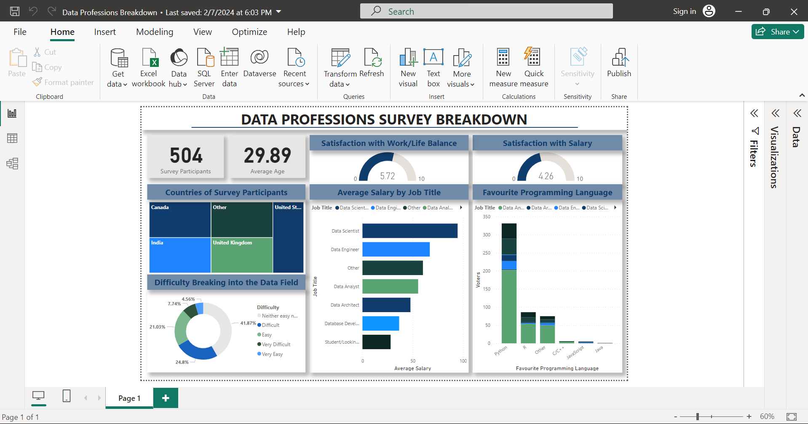

Goal
The Data Professions Breakdown dashboard offers a comprehensive analysis of global data specializations. Its goal is to assist individuals considering careers in data by providing valuable insights. By examining various data roles, the dashboard equips aspiring professionals with the knowledge needed to make informed career decisions in the dynamic field of data science and analytics.
About the Data
The dataset comprises findings from a survey administered to professionals within the data industry. The information gathered from the survey partcipants includes their country, age, yearly salary, industry, level of happiness, favourite programming language, age, sex, level of education and level of difficulty when transitioning into the field amongst others.
Data Loading and Transformation
The first step is cleaning the data to ensure accurate analysis. This includes removing duplicates, changing datatypes and modifying columns to suit the analysis needs. The following major transformations were made to the data.
- Grouping the option 'Others' : The sections with information on the survey participant's role, industry, country, favourite programming language, included an option with 'Other' where they could specify whatever information was needed. However to facilitate a better visualization, all information under that option was grouped under one umbrella 'Other'. This was achieved by splitting such options by a delimiter and deleting the column that contained the extra information.
- Creating an 'Average salary' column : The attribute that contained information on the yearly salary of the participants was in the format of a range. (Eg.'41k-56k') To calculate the average salary column, the 'Current Yearly Salary' column was first split using 'by Digit to Non-digit' to seperate the numeric values. The remaining values are then replaced with blanks to get to seperate columns for the range. After converting the datatype to numbers, a custom column was created with a formula to calculate the average salary.

Dashboard Design and Creation
After applying the transformations, the processed data is visualized. The dashboard detailed the total number of participants, the average age, a treemap to filter by country, the average salary of each profession, happiness level, programming language and difficulty breaking into each field.
Conclusion
A total of 504 individuals participated in the survey, with an average age of approximately 30 years. Key insights gleaned from the analysis revealed that the role of Data Scientist commanded the highest salary, and Python emerged as the most favored programming language among respondents. Interestingly, a significant portion of participants expressed neutrality regarding the difficulty of breaking into the field, while only a minority reported encountering substantial challenges in transitioning. Additionally, respondents indicated an average work/life balance satisfaction rating of around 6 on a scale of 0 to 10. Also, satisfaction with salary averaged around 4 on the same scale.